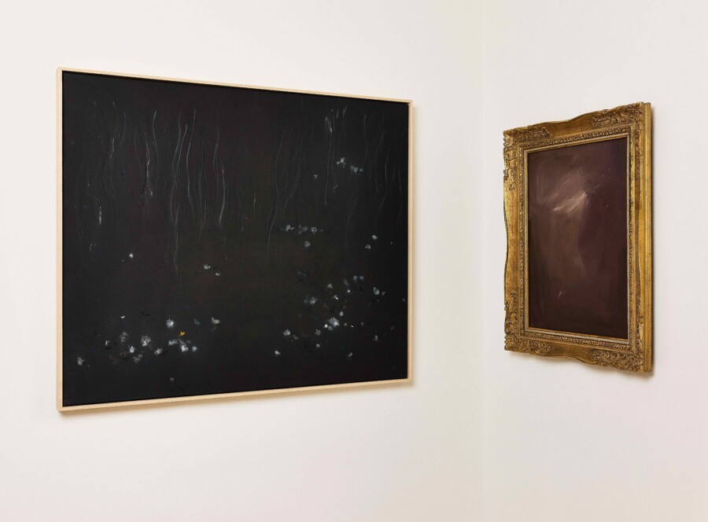

Elle Aiche: Dancing Light
Dancing Light
An Art Exhibition of New Works by Elle Aiche
Hinsdale, Illinois — February 2026 — Celestial Art Curation Gallery presents Dancing Light, a solo exhibition featuring Elle Aiche’s newest body of work, on view beginning February 28, 2026, at the gallery’s Hinsdale location.
The exhibition opens with a public reception on Friday, February 28, 2026, beginning at 5:00 PM, featuring an early, family-friendly viewing from 4:00 to 5:00 PM, followed by an evening reception with the artist.
Dancing Light follows Elle Aiche’s first solo exhibition at Celestial Art Curation in fall 2024 and a year marked by near sell-out collections, establishing her as one of the gallery’s most closely followed emerging voices. Fiercely sought after by interior designers and private collectors, Aiche’s works create an emotional resonance that extends beyond the visual, shaping how spaces are felt as much as how they are seen.
This new body of work represents a decisive shift in her practice — moving beyond light as atmosphere and treating it as an active, emotional force that shapes how we experience space, memory, and presence.
Rather than depicting light, Aiche constructs it. Her compositions use movement, reflection, and layered abstraction to create a physical sense of luminous depth — works that feel as though they are unfolding in real time as the viewer moves through the space.
“This body of work considers light in motion — how it shifts, responds, and carries emotion through space,” Aiche said. “I’m interested in the moment where perception changes — where what you see becomes something you feel.”